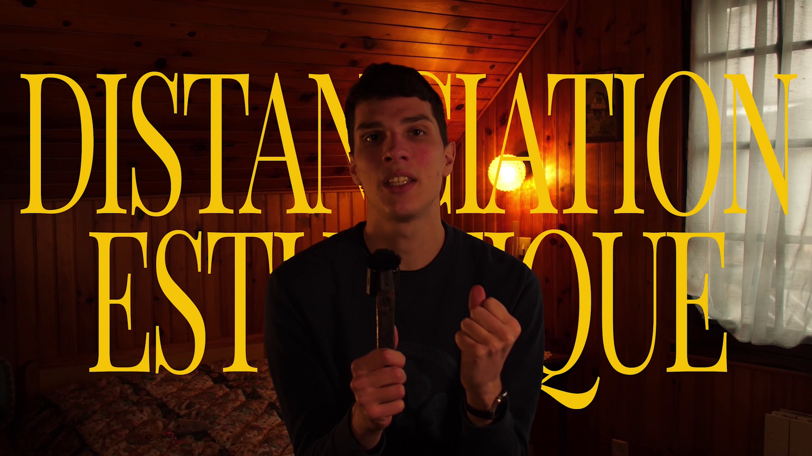
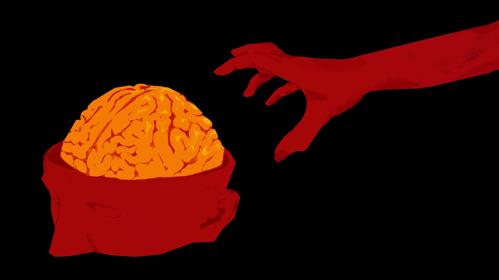
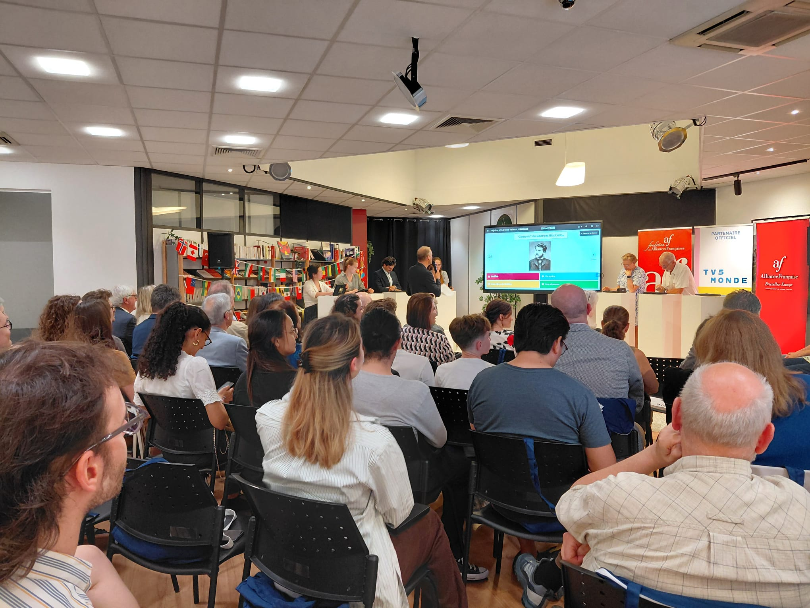

2025 – 2026 · Champs-sur-Marne
Master Cinéma et Audiovisuel, Université Gustave Eiffel
Spécialisation Réalisation
2025 – 2026 · Champs-sur-Marne
Spécialisation Réalisation
2023 – 2026 · Champs-sur-Marne
Filière IMAC (Image, Multimédia, Audiovisuel, Communication) de l'ESIEE Paris, en spécialisation Audiovisuel
Mars 2026 - Août 2026 · Paris
Gestion des réseaux sociaux et de la communication multimédia de l'émission Destination francophonie, axé sur la promotion de la langue française à l'étranger.
Mai 2025 – Août 2025 · Malaisie
Communication en faveur de l'établissement, dans le but d'attirer de nouveaux étudiants, notamment étrangers.
Juillet 2024 · Paris
Réalisation d’un algorithme de récupération de vidéos de webcam en C++, dans le cadre du développement du logiciel Coollab.

Inestimable est un documentaire retraçant le parcours d'une artiste amateur, avant d'ouvrir sur une réflexion plus large : qu'est-ce qui fait la valeur d'une œuvre, et existe-t-il une hiérarchie entre les arts ?

Everything is Alright est un générique de film fictif, qui raconte l’histoire d’une secte fondée autour du culte extrême de la culture et de la connaissance.

Ces mini-reportages instagram ont été réalisés lors de mon stage à TV5MONDE, et diffusés sur les réseaux sociaux de l'émission Destination francophonie.